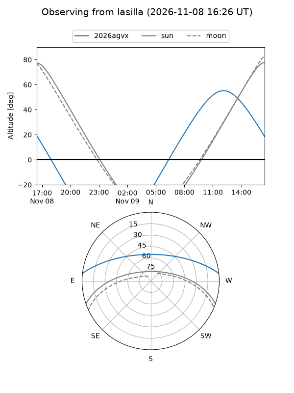
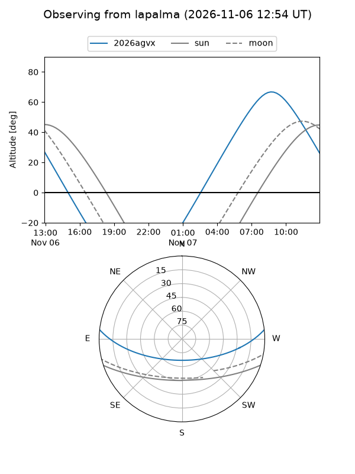
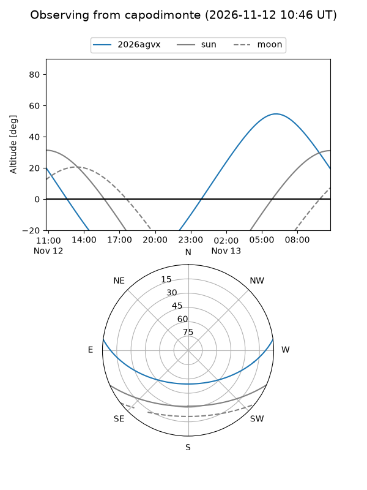
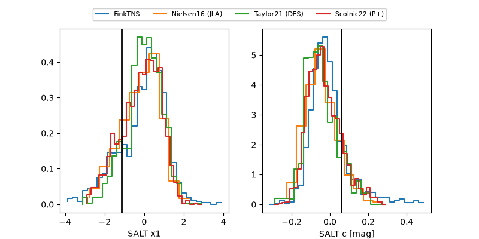

2026agvx
Target 2026agvx at 2026-11-12 09:20
Aliases and brokers:
FINK-ZTF: ztf.fink-portal.org/ZTF26accxsny
Lasair-ZTF: lasair-ztf.lsst.ac.uk/objects/ZTF26accxsny
ALeRCE-ZTF: alerce.online/object/ZTF26accxsny
YSE-PZ: ziggy.ucolick.org/yse/transient_detail/2026agvx
TNS name: wis-tns.org/object/2026agvx
Direct TNS query: direct search
alt names
ZTF26accxsny (ztf,fink_ztf)
2026agvx (tns,yse)
Coordinates:
equatorial (ra, dec) = 159.3157,+5.67990
equatorial (HMS+DMS) = 10:37:15.77,+05:40:47.64
galactic (l, b) = (240.7473,+51.56004)
Flags:
peak dt: +7.3
Photometry:
last atlasc=18.70, ztfr=18.64
1 atlasc, 4 ztfr detections
Lightcurve
Visibility



Additional plots
